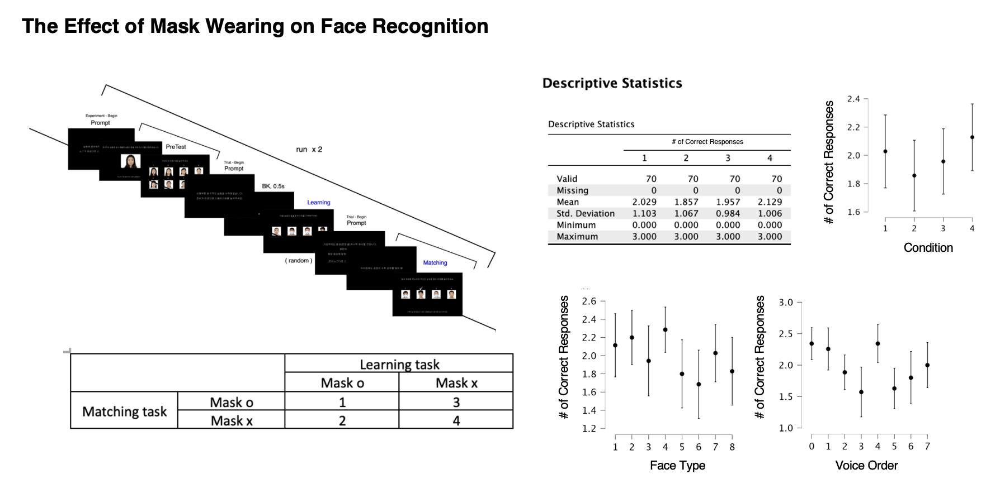
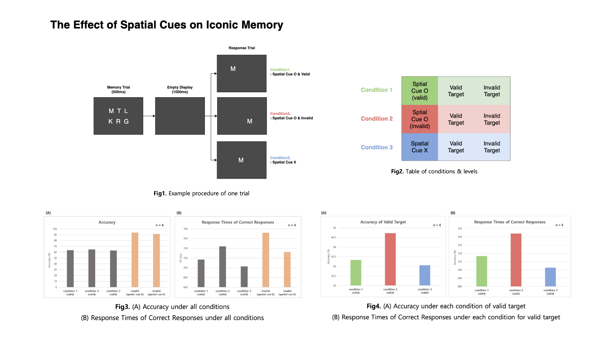
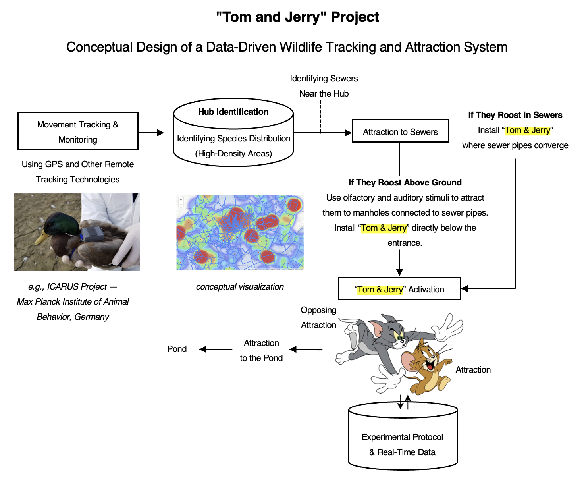

Brain and Cognitive Science Community
Academic community · 2023–2024
A year-long study community for students from various majors across the country with a shared interest in brain and cognitive science, built around paper presentations and replication studies.
Note. These undergraduate projects were part of my early training in cognitive science, where I learned experimental methods by reading papers, replicating existing paradigms, and designing small-scale studies. They are presented here as learning projects rather than fully developed research studies; in retrospect, their methodological limitations became valuable lessons for designing more rigorous experiments.
1PsychoPy: Visual Experiment Design & Replication
Designed and ran a visual experiment using PsychoPy, replicating and extending prior work as "The Effect of Mask Wearing on Face Recognition."
This project was conducted as a follow-up to the Introduction to Visual Perception study group, with the goal of applying our knowledge of vision science to experimental design and replicating previous research in a contemporary context. As face masks became widespread during the COVID-19 pandemic, questions emerged about how covering facial features might affect face recognition. Building on research on holistic face processing and Castelli et al. (2022), we investigated whether wearing a face mask during learning and recognition affects face identification performance in Korean participants.

The experiment was adapted from Castelli et al. (2022) and implemented in PsychoPy. Participants learned associations between faces and voices of four Korean male speakers and subsequently completed a matching task. We manipulated whether each face was presented with or without a mask during the learning and matching phases, resulting in four conditions: Mask–Mask, Mask–No Mask, No Mask–Mask, and No Mask–No Mask. Face stimuli were selected from the Chicago Face Database, and Korean AI-generated voices were used as auditory cues.
We first examined recognition accuracy across individual face and voice stimuli and found variability in performance across stimuli. We then compared accuracy across the four mask conditions. Although mean accuracy varied across conditions, no statistically significant effect of mask condition on face identification accuracy was observed (p > .05). The limited number of observations per condition and variability in voice recognition may have reduced the sensitivity of the experiment.
The experiment did not provide evidence that the presence or absence of a mask significantly affected identification accuracy. Participant feedback suggested that some relied heavily on visible features around the eyes, while others reported that masks changed their overall impression of a face. More importantly, this project gave me hands-on experience with the full experimental research process—from literature review and hypothesis development to experimental design, implementation, data collection, and behavioral analysis. It also highlighted how strongly experimental conclusions depend on careful task design and stimulus control. In particular, using voices as identification cues introduced an unintended memory-related factor, demonstrating the importance of isolating the cognitive process of interest. The project also provided practical experience in building behavioral experiments with PsychoPy and motivated further exploration of face recognition using measures such as eye tracking or neuroimaging.
2The Effect of Spatial Cues on Iconic Memory
Iconic memory is a brief form of visual sensory memory that allows visual information to persist momentarily after a stimulus disappears. Building on Sperling’s classic iconic memory paradigm, this project explored how spatial cues influence the retrieval of briefly presented visual information. The project was also designed as a hands-on introduction to experimental programming. After studying visual angle and learning MATLAB and Psychtoolbox, we designed and implemented a pilot behavioral experiment examining the relationship between iconic memory and spatial attention.

Four participants completed a visual memory task consisting of a 500-ms memory display, a 1,000-ms blank interval, and a response display. During the memory display, six randomly selected letters were presented in a 2 × 3 grid. In the response phase, participants judged whether a target letter had appeared in the preceding display. The experiment manipulated three spatial-cue conditions:
- Valid Cue — the cue correctly indicated the target location
- Invalid Cue — the cue indicated a different location
- No Cue — no spatial information was provided
Target presence was also manipulated, resulting in six experimental conditions. Each participant completed 540 trials in total. The experiment was implemented using MATLAB R2022a and Psychtoolbox-3.
Given the small sample size (n= 4), the study was treated as a pilot experiment and analyzed descriptively rather than through inferential statistics. Overall, accuracy was lower for present targets (63.70%) than for absent targets (92.36%). Response times also varied depending on cue availability and target presence. Among present-target trials, the invalid-cue condition showed slightly higher accuracy, although the differences across cue conditions were small. These patterns should not be interpreted as evidence for a reliable spatial-cue effect because of the limited sample size and several constraints in the experimental design.
This pilot study revealed several design issues that would need to be addressed in a larger follow-up experiment. In particular, visual similarity among letter stimuli should be better controlled, and the task should more carefully balance the decision processes required for present and absent targets. The identical structure of some absent-target trials across spatial-cue conditions also introduced unnecessary repetition. More importantly, the project provided hands-on experience in translating a classic cognitive paradigm into a programmable behavioral experiment, from defining experimental conditions and controlling stimulus presentation to collecting and interpreting behavioral data. It also gave me practical experience with MATLAB and Psychtoolbox and demonstrated how pilot data can be used not only to test a hypothesis, but also to identify weaknesses in an experimental design and guide its refinement.
3Idea Hackathon: Tom & Jerry
As club president, organized the community's "Brain & Cognitive Science Idea Hackathon." Presented a project inspired by the Pied Piper, exploring a cognitive-science approach to guiding rats toward a single location — awarded 2nd place.

Inspired by the Max Planck Institute of Animal Behavior's ICARUS project — which combines movement-based earth observation with species-distribution modeling — I designed a protocol for identifying rats' preference and avoidance behaviors, in order to design an aversive stimulus ("Tom") and an attractive stimulus ("Jerry"). Stimuli were placed by drawing on how rats communicate, using ultrasonic vocalizations (USVs) and chemical (odorant) signals, with approach-attempt counts used to gauge preference and learning.
Tom (deterrent): 22kHz-range USVs (typically emitted under anxiety or fear — e.g., predator scent, social defeat), chemical signals (predator odor, e.g., cat urine), physical deterrence (forced relocation of congregated rats), forward-facing cameras (to estimate mortality/congestion by chemical concentration and train a model for the optimal concentration), and GPS (real-time location relayed to a central control point) — with deterrents placed along escape routes predicted from sewage-line maps.
Jerry (attractant): 55kHz-range USVs and chemical (odorant) signals.
김성현, 최준기, 김재석, 장아름, 이재호, 차경진, & 이상원. (2018). 빅데이터와 딥러닝을 활용한 동물 감염병 확산 차단. 지능정보연구, 24(4), 137-154. http://dx.doi.org/10.13088/jiis.2018.24.4.137
최준식. (2022). 심리학 및 행동생물학적 연구에서 동물 로봇의 활용과 전망. 로봇학회 논문지, 17(1), 86-92. https://doi.org/10.7746/jkros.2022.17.1.086
Turner, L. W., et al. "Monitoring cattle behavior and pasture use with GPS and GIS." Canadian Journal of Animal Science 80.3 (2000): 405-413. https://doi.org/10.4141/A99-093
Amir, Alon, et al. "Amygdala signaling during foraging in a hazardous environment." Journal of Neuroscience 35.38 (2015): 12994-13005. https://doi.org/10.1523/JNEUROSCI.0407-15.2015